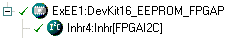
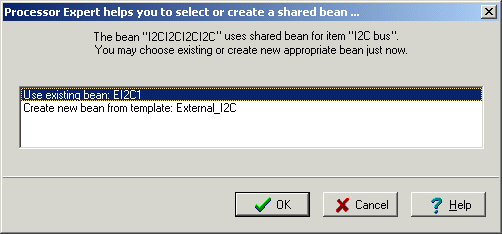

|
User manual |
| |
Component Inheritance and Component Sharing
Basic Terms
- Ancestor is a component that is inherited (used) by another component.
- Descendant is a new component that inherits (uses) another component(s).
- Shared Ancestor is a component that can be used and shared by multiple components.
Inheritance
Inheritance in Processor Expert means that an ancestor component is used only by the descendant component. Inheritance is supported in order to allow components to access peripherals by hardware-independent interface of the ancestor components. For example, a component that emulates a simple I2C transmitter may inherit two BitIO components for generation of an output signal.
On several complex components inheritance is used to separate component settings into several logical parts, for example settings of channel is inherited in the component with settings of the main peripheral module.
Settings in Processor Expert
The Descendant component contains a property that allows selecting an ancestor component from a predefined list of templates. The component is created after selection of an appropriate template name (or component name) from the list of the templates fitting the specified interface. Any previously used ancestor component is discarded.
|
|
| Figure 1 - Inherited component item in inspector. |
Clicking on the button unfolds the properties of the inherited component directly under the intherited component property line.
Clicking on the button fully opens the ancestor component with properties, methods, and events within the Component inspector.
Processor Expert allows the user to select from ancestors that implement the required interface and are registered by the descendant component.
The ancestor component is displayed under its descendant in the project structure tree in the project panel.
|
 |
| Figure 2 - Example of ancestor and descendant components in the project panel tree. |
An ancestor component requires a list of methods and events (interface), which must be implemented by an ancestor component. The error is shown if the ancestor component does not implement any of them. For example, if the settings of the descendant component do not allow it to generate this method.
Component Sharing
Component sharing allows the user to cause several components to use capability of one component with the way similar to inheritance. This feature allows sharing of its resources and its drivers with other Components.
For example, components may share an I2C component for communication with peripherals connected to the I2C bus or some component may do DMA transfers via DMA component.
Settings in Processor Expert
A shared ancestor component contains a property that allows the user to select existing shared ancestor component or create a new one. In this case, the ancestor component is included in the project tree as the other components. The ancestor component may be used with the descendant component only if it is created from a template registered in the descendant component or if the component type is registered in the descendant component. It is recommended that you always create a shared ancestor component through a descendant component.
Click the button to select an existing shared ancestor component from the current project. Click the  button to select an existing ancestor component or create a new ancestor component using the wizard (see below).
button to select an existing ancestor component or create a new ancestor component using the wizard (see below).
|
|
| Figure 3 - Example of popup menu for creating a new shared ancestor component. |
Selection/Creation Wizard
When a component with a link to a shared ancestor component is added to the project, the following wizard dialog box appears. This wizard helps you to select or create the shared ancestor component quickly.
|
 |
| Figure 4 - Example of popup menu for creating new shared ancestor component. |
Run-time Resources Allocation
Processor Expert (generated code) does not check the usage of shared resources/code. It's up to the user to ensure the correct run-time resources allocation of a shared ancestor component. Often, it is not possible for a shared ancestor component to be used simultaneously by several components.
PROCESSOR EXPERT is trademark of Freescale Semiconductor, Inc.